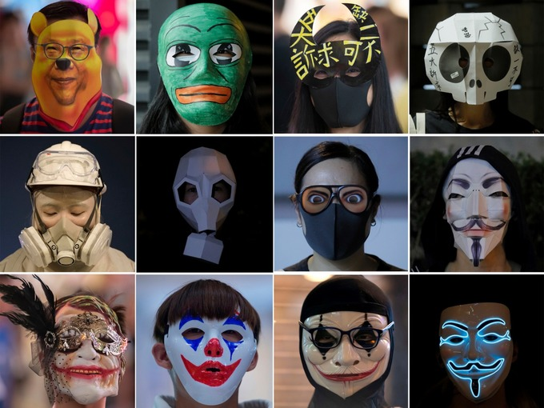
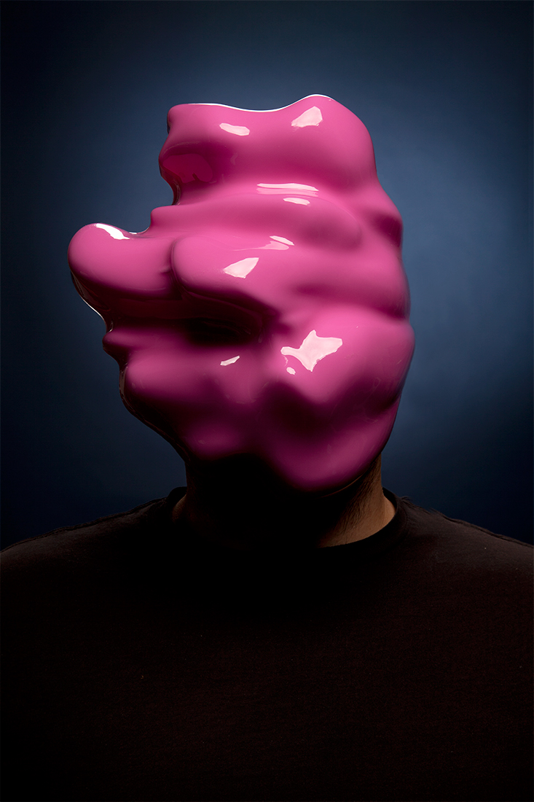
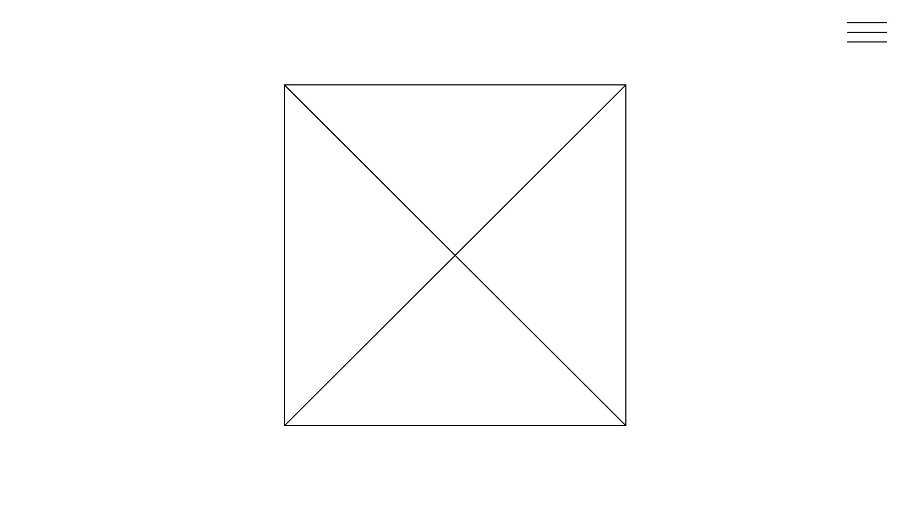
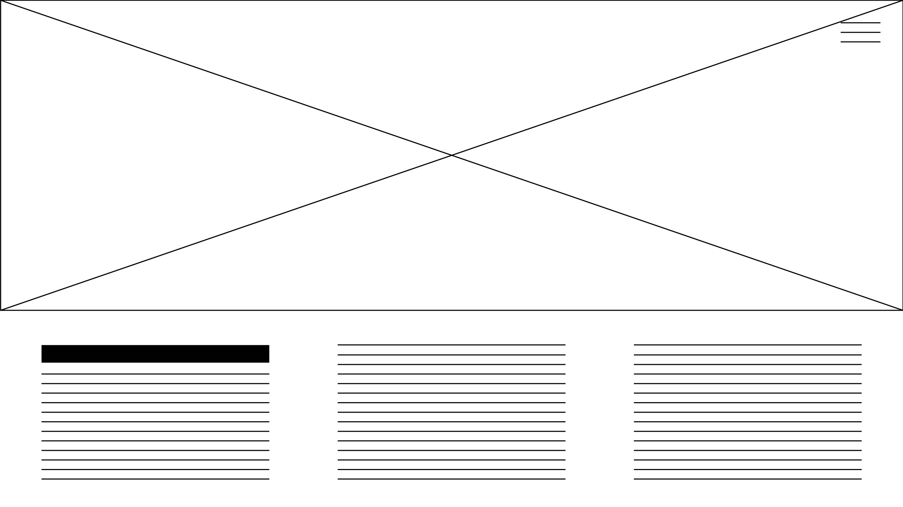
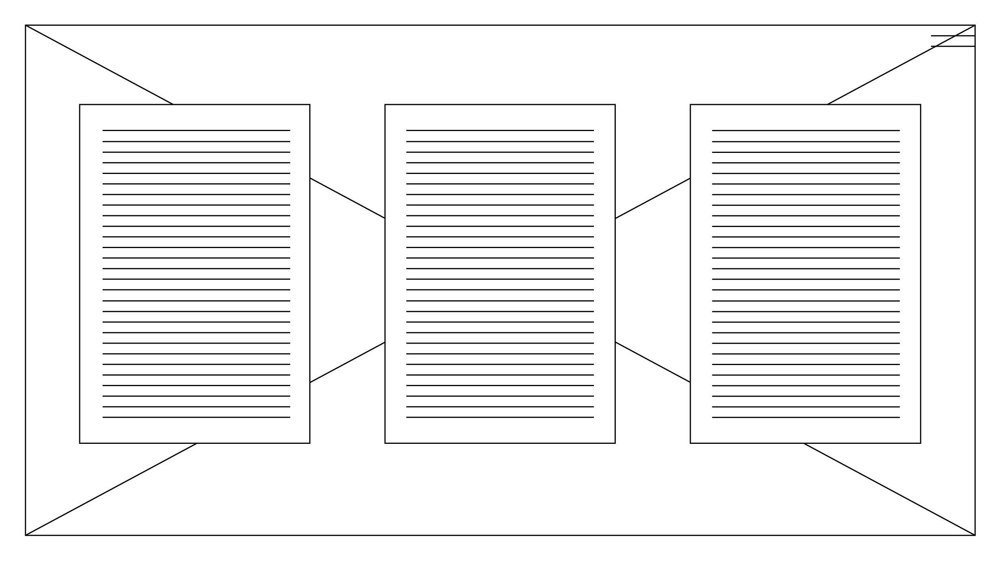
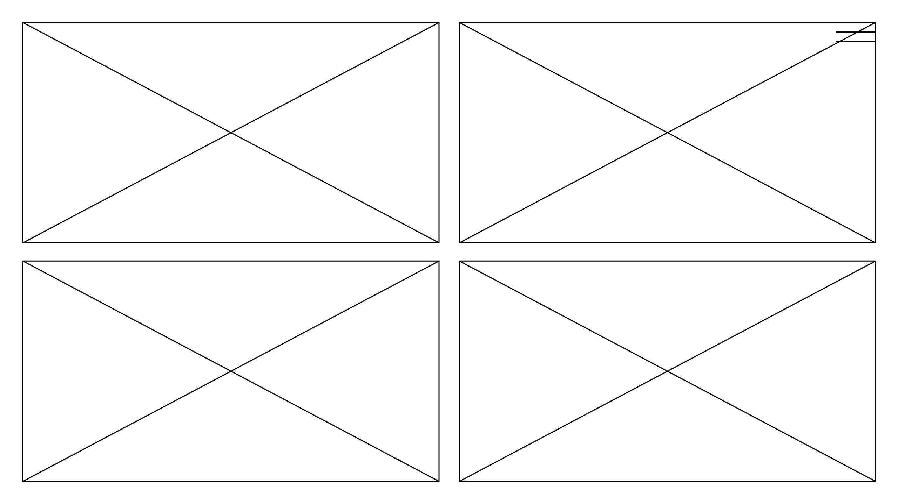
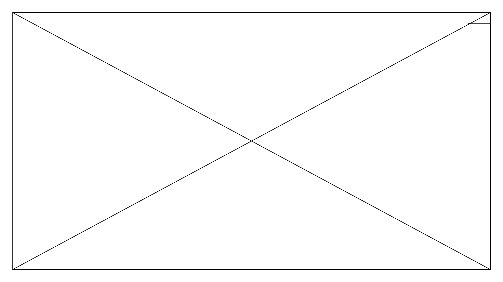
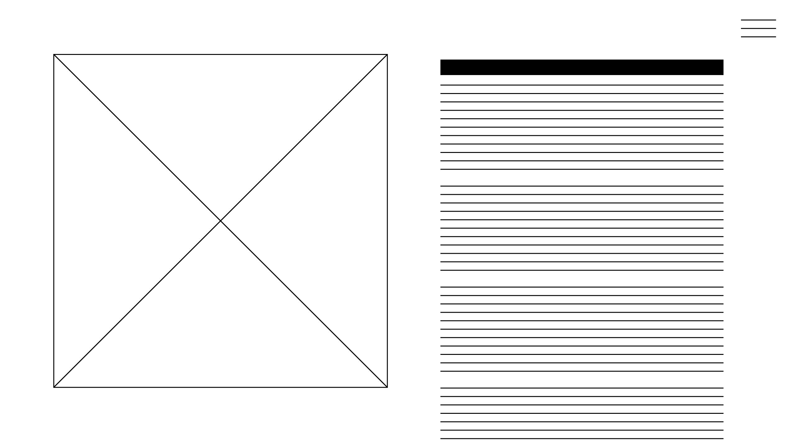
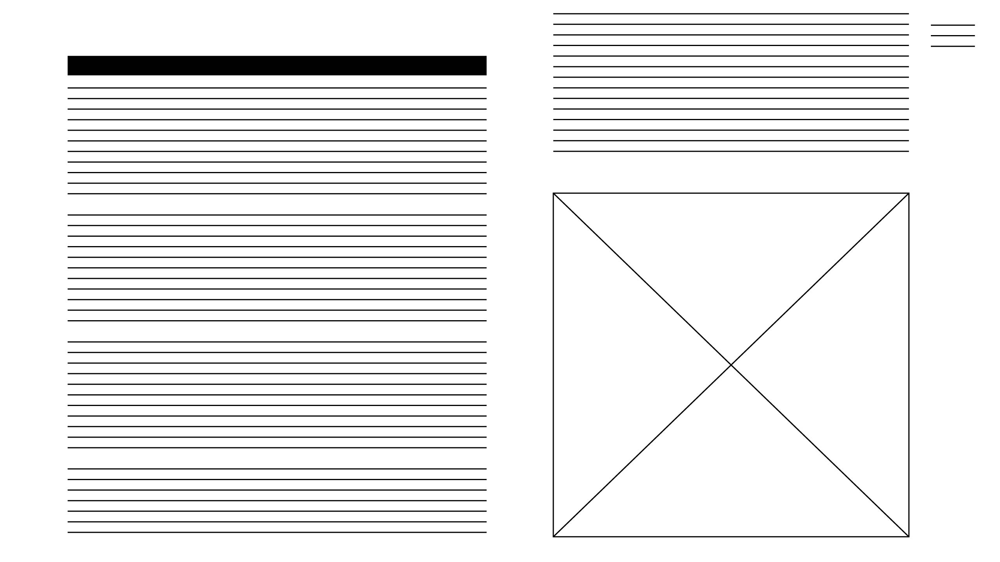

This May, I got to experience Hong Kong for a short 24 hour layover before the protests began in June. Meeting my uncle, a local resident, for the first time in a while and talking to him about his experiences living in the city gave me a deeper understanding of his emotions, but also the sentiments felt by the people of Hong Kong.
To the world, Hong Kong exists merely as a cosmopolitan city undergoing minor political turmoil, but to me, Hong Kong is much more. It’s a place brimmed with fearless emotions, with a will to fight to the end. The current arrangement of “one country, two systems” between China and China is set to expire in 2047, meaning that China will regain full sovereignty over Hong Kong’s autonomy.
The borrowed time in this borrowed city urges me to question and enact the concept of “masking” as an intervention, obscuring and revoking omnipresent surveillance felt through 7.5 million Hong Kong residents.
The pixelated rabbit apparent throughout this website is a reference to 2047 as it is the Chinese zodiac year of the rabbit.
ESSAY
On October 4th, Hong Kong Chief Executive Carrie Lam invoked long-unused colonial legislation to bring in a ban on the wearing of face masks by protesters. In the wake of her announcement, those demonstrating have begun to tear down some of the city’s “smart lamp posts”, which are equipped with surveillance cameras and sensors. They also, on October 18th, donned cartoon character masks in an effort to mock China’s leaders, forming a 40km long human chain tracing the city’s subway system (Ridler 2019).
These acts obstructing and thwarting mass surveillance in China incite us to question the place of social relations in the prevailing discourses surrounding biometric technologies. Do anti-surveillance tactics have the power to denaturalize the discriminatory orders imposed by state-corporate apparatuses? Do they force the recognition of people as possessing legitimate autonomy and agency? Do they have the capacity and valence to transform systems of oppression? What, exactly, do anti-surveillance tactics perform in our neo-colonial, bio-political age?
I would like to consider, in particular, the actual and potential use of masks as tools of resistance, examining examples of their current tactical use, and proposing their meaning in the context of Hong Kong’s protests.

Masks at Hong Kong Protests
Masks have been used across cultures and times in rituals, conveying connections to the natural world. They have been used to communicate social status and privilege, or to conceal identity, affording a suspended behavioural state which make possible the wearer’s transgression of traditional social norms and boundaries (Ca’Macana 2013).
In the case of the protests in Hong Kong, masks can also assert an anonymous collectivity, drawing attention to issues of shared concern while protecting individuals from reprisal. Other deployments of masks for social movements include ski masks worn by the Zapatistas, scarves worn by the “black bloc”, and Guy Fawkes masks worn by Anonymous or Occupy Wall Street activists (Nail 2013). These cases exemplify the recent upsurge of ‘masking’ as a response to our era of pervasive surveillance. Alongside increasing public awareness of drone warfare, government spying programs, and big data analytics (especially with China’s social credit system), a curious trend in anti-surveillance tactics is emerging. While tactics range from software for anonymous Internet browsing to detoxification supplements for fooling drug tests, what is fascinating is the panoply of artistic projects and interventions that teach us how to hide from machines and ambient surveillance in public spaces.
One example is Chicago-based artist Leo Selvaggio’s “URME Personal Surveillance Identity Prosthetic”, which are 3D printed hard resin reproductions of his own face, potentially spawning swarms of expressionless doppelgängers moving through the streets. He tested the masks with face-recognition systems like the one used by Facebook, successfully fooling the algorithm into identifying the masks as his face. In a produced video, he comments “Surveillance is here, and it’s here to stay. And rather than try and combat that surveillance directly, I propose that we change what’s being surveilled, until the reason we are surveilled is no longer relevant” (Selvaggio 2014). Selvaggio’s masks are premised on assumptions of essential or true identities that are somehow corrupted by exposure to state and corporate surveillance. As he says, “We are watched and fundamentally changed. We perform rather than be”, Selvaggio points out how technological systems are inseparable from social context, and come in turn to taint individual behaviour. They are constitutive and co-productive of those contexts, enabling social action and interaction in ways that are always value-laden, regardless of the system in question (Monahan 2015).
Leo Selvaggio's URME Mask

Zach Blas's Fag Face Mask
London-based artist Zach Blas, for his part, has created a series of amorphous masks under a project called the “Facial Weaponization Suite” (2011-14). Blas’s masks capture the images of many different faces and aggregates them into one grotesque, amoebic, plastic mask that confounds face-recognition systems and defies legibility by people or machines. The masks address biometric software’s built-in prejudices towards sexual orientation, blackness, feminism, and cross-border relations in the absence of any other information. Blas forges these collective masks to critique regimes of visibility that reduce people to static identity categories and discriminate against them, showing the grotesqueness of bigoted categorization while also serving as a symbolic weapon against the unnamed enemies who would control through stigmatizing visualizations (Monohan 2015).
Blas articulates that “we propose to start making faces our weapons. We can learn many faces and wear them interchangeably. A face is like being armed…today, in our biometric age, existence has become a means of control… becoming nonexistent turns your face into fog, and fog makes revolt possible” (Blas 2012).
The “Facial Weaponization Suite” aspires to erase identity markers altogether and epitomizes the logic of the right to hide and become invisible to institutions. At the same time, it questions the semantic appeal to militarized action. If faces are already being enlisted in militarized security responses, for instance through China’s increased surveillance in Hong Kong protests, then military logics already prevail and infuse dominant discourses and practices (Monohan 2015). The hegemony of militaristic framings bounds what is viewed as possible and practical, positioning resistance problematically as threatening to the nation state and deserving of criminalization.
Anti-surveillance camouflage tactics through ‘masking’ challenges forms of violence and oppression, acknowledging differential exposures and effects. As addressed by anti-surveillance artists Leo Selvaggio and Zach Blas, masks act as an opaque tool of collective transformation, defying neocolonial aspirations and reconfiguring the concept of a post-anatomical body. In the case of Hong Kong, masks disrupt legibility by surveillance apparatuses, but more importantly, function to express solidarity, and galvanize change against the Chinese government even if the chances of success are almost futile.
dismagazine.com
The very low-tech nature of this website and overlay of internet stock images of surveillance cameras brings an honest humour to “how to hide away from machines”. I want my website to produce a similar effect while allowing viewers to engage with the content.
2
cobosrl.co
This website found on awwwards.com has a drop menu on the right ride and has multiple scroll down pages. I would like my website to follow a similar flow/layout when scrolling down and have a navigation bar on the right hand side.
3
jeeliz.com
My splash page will incorporate a simple 2D face detection and tracking with a rabbit mask. It will invite viewers to turn on their webcams in order to do this, introducing the website’s content on anti-surveillance and thwarting face-recognition systems.
4
frankpoth.info
I would like to incorporate and modify this simple javascript platformer game, and place it somewhere in the middle of the website. Instead of carrots, the rabbit character will be collecting security cameras. The background will also be changed to a darker Hong Kong cityscape.
WIREFRAMES

home/splash page - rabbit mask face recognitionside menu

preface page

hong kong page

masks page

game page - rabbit/security camera platformer game

leo selvaggio page

zach blas page
Ca’Macana,“The Old Tradition of Disguise: A Brief History of Venetian Masks,” Ca’Macana Venezia, 15 October 2013, http://www.camacana.com/a-brief-history-of-venetian-masks/ (accessed October 21, 2019).
Monahan, Torin. “The Right to Hide? Anti-Surveillance Camouflage and the Aestheticization of Resistance.” Communication and Critical/Cultural Studies, vol. 12, no. 2, Feb. 2015, pp. 159–178., doi:10.1080/14791420.2015.1006646. Available from https://www.tandfonline.com/doi/pdf/10.1080/14791420.2015.1006646. (accessed October 21, 2019).
Nail, Thomas. “The Politics of the Mask.” HuffPost, 23 Jan. 2014, https://www.huffpost.com/entry/the-politics-of-the-mask_b_4262001?view=screen. (accessed October 21, 2019).
Ridler, Faith. “Hong Kong Activists Wear Joker and Winnie-the-Pooh Masks.” Daily Mail, 19 Oct. 2019, https://www.dailymail.co.uk/news/article-7590823/Hong-Kong-activists-wear-Joker-Winnie-Pooh-masks.html. (accessed October 21, 2019).